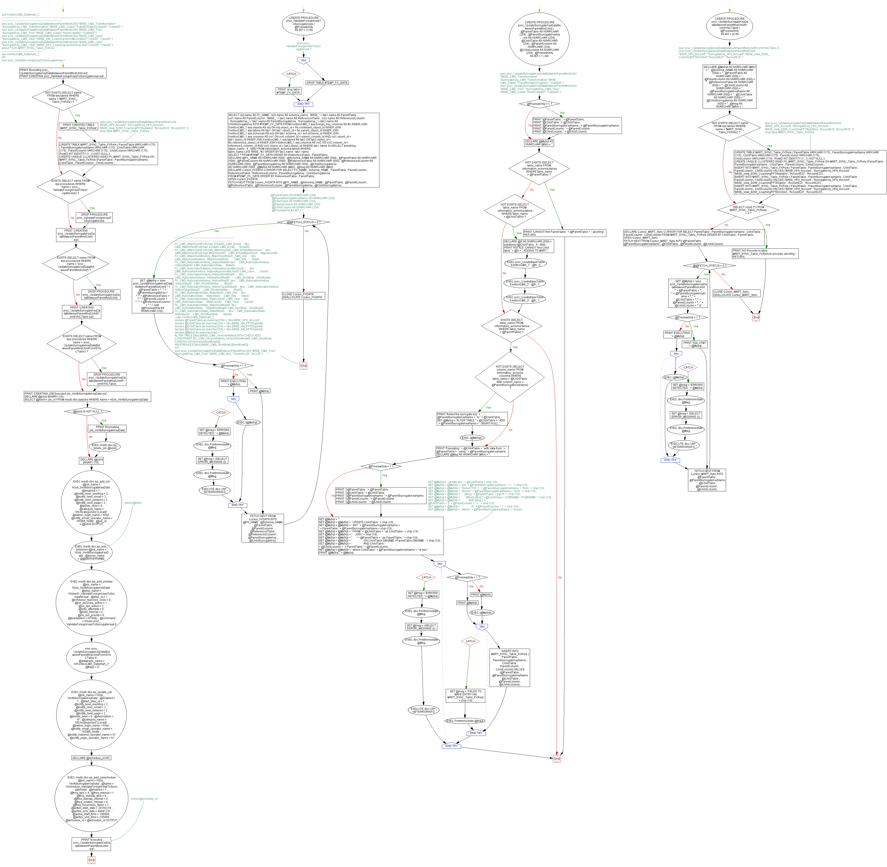

<a href="proc_UpdateSurrogateKeyDataBetweenParentAndChild.png"></a>
--use KenticoCMS_Datamart_2; GO /*---------------------------------------------------------------------------------------------------------------------------------------------------------------------- exec proc_UpdateSurrogateKeyDataBetweenParentAndChild "BASE_CMS_Transformation", "SurrogateKey_CMS_Transformation","BASE_CMS_Class","TransformationClassID", "ClassID",1 exec proc_UpdateSurrogateKeyDataBetweenParentAndChild "BASE_CMS_Tree", "SurrogateKey_CMS_Tree","BASE_CMS_Class","NodeClassID", "ClassID",1 exec proc_UpdateSurrogateKeyDataBetweenParentAndChild "BASE_CMS_User", "SurrogateKey_CMS_User","BASE_Hfit_CoachingUserCMCondition","UserID", "UserID",1 exec proc_UpdateSurrogateKeyDataBetweenParentAndChild "BASE_CMS_User", "SurrogateKey_CMS_User","BASE_HFit_CoachingUserServiceLevel","UserID", "UserID",1 select * from MART_SYNC_Table_FKRels */ /*-------------------------------------------- use KenticoCMS_Datamart_2; GO exec proc_ValidateForeignKeysToSurrogateKeys 1 */ GO PRINT 'Executing proc_UpdateSurrogateKeyDataBetweenParentAndChild.sql'; PRINT 'CREATING proc_ValidateForeignKeysToSurrogateKeys.sql'; GO IF NOT EXISTS (SELECT name FROM sys.tables WHERE name = 'MART_SYNC_Table_FKRels') BEGIN PRINT 'CREATED TABLE MART_SYNC_Table_FKRels'; --exec proc_UpdateSurrogateKeyDataBetweenParentAndChild 'BASE_HFit_Account', 'SurrogateKey_HFit_Account', 'BASE_view_EDW_CoachingPPTAvailable', 'AccountCD', 'AccountCD', 0 -- drop table MART_SYNC_Table_FKRels CREATE TABLE MART_SYNC_Table_FKRels ( ParentTable VARCHAR (175) , ParentSurrogateKeyName VARCHAR (175) , ChildTable VARCHAR (175) , ParentColumn VARCHAR (175) , ChildColumn VARCHAR (175) , RowID INT IDENTITY (1 , 1) NOT NULL ); CREATE UNIQUE CLUSTERED INDEX PI_MART_SYNC_Table_FKRels ON MART_SYNC_Table_FKRels (ParentTable , ParentSurrogateKeyName , ChildTable , ParentColumn , ChildColumn) ; END; GO IF EXISTS (SELECT name FROM sys.procedures WHERE name = 'proc_ValidateForeignKeysToSurrogateKeys') BEGIN DROP PROCEDURE proc_ValidateForeignKeysToSurrogateKeys; END; GO -- exec proc_ValidateForeignKeysToSurrogateKeys 1 CREATE PROCEDURE proc_ValidateForeignKeysToSurrogateKeys ( @PreviewOnly AS BIT = 1) AS BEGIN BEGIN TRY DROP TABLE #TEMP_FK_DATA; END TRY BEGIN CATCH PRINT 'drop table #TEMP_FK_DATA'; END CATCH; SELECT obj.name AS FK_NAME , sch.name AS schema_name , 'BASE_' + tab1.name AS ParentTable , col1.name AS ParentColumn , 'BASE_' + tab2.name AS ReferencedTable , col2.name AS ReferencedColumn , 'SurrogateKey_' + tab1.name AS ParentSurrogateKey , 'SurrogateKey_' + tab2.name AS ChildSurrogateKey INTO #TEMP_FK_DATA FROM KenticoCMS_1.sys.foreign_key_columns AS fkc INNER JOIN KenticoCMS_1.sys.objects AS obj ON obj.object_id = fkc.constraint_object_id INNER JOIN KenticoCMS_1.sys.tables AS tab1 ON tab1.object_id = fkc.parent_object_id INNER JOIN KenticoCMS_1.sys.schemas AS sch ON tab1.schema_id = sch.schema_id INNER JOIN KenticoCMS_1.sys.columns AS col1 ON col1.column_id = parent_column_id AND col1.object_id = tab1.object_id INNER JOIN KenticoCMS_1.sys.tables AS tab2 ON tab2.object_id = fkc.referenced_object_id INNER JOIN KenticoCMS_1.sys.columns AS col2 ON col2.column_id = referenced_column_id AND col2.object_id = tab2.object_id WHERE tab1.name IN (SELECT substring (table_name , 6 , 999) FROM information_schema.tables WHERE table_name LIKE 'BASE_%') ORDER BY tab2.name , tab1.name; SELECT * FROM #TEMP_FK_DATA ORDER BY ReferencedTable , ParentTable; DECLARE @FK_NAME AS NVARCHAR (500) , @Schema_NAME AS NVARCHAR (500) , @ParentTable AS NVARCHAR (500) , @ParentColumn AS NVARCHAR (500) , @ReferencedTable AS NVARCHAR (500) , @ReferencedColumn AS NVARCHAR (500) , @ParentSurrogateKey AS NVARCHAR (500) , @ChildSurrogateKey AS NVARCHAR (500) , @MySql AS NVARCHAR (MAX) , @msg AS NVARCHAR (MAX) ; DECLARE Cursor_FKDATA CURSOR FOR SELECT FK_NAME , Schema_NAME , ParentTable , ParentColumn , ReferencedTable , ReferencedColumn , ParentSurrogateKey , ChildSurrogateKey FROM #TEMP_FK_DATA ORDER BY ReferencedTable , ParentTable; OPEN Cursor_FKDATA; FETCH NEXT FROM Cursor_FKDATA INTO @FK_NAME , @Schema_NAME , @ParentTable , @ParentColumn , @ReferencedTable , @ReferencedColumn , @ParentSurrogateKey , @ChildSurrogateKey; -- @ParentTable AS NVARCHAR (254) --, @ParentSurrogateKeyName AS NVARCHAR (254) --, @ChildTable AS NVARCHAR (254) --, @ParentColumn AS NVARCHAR (254) --, @ChildColumn AS NVARCHAR (254) --, @PreviewOnly AS BIT = 1 WHILE @@FETCH_STATUS = 0 BEGIN SET @MySql = 'exec proc_UpdateSurrogateKeyDataBetweenParentAndChild "' + @ParentTable + '", "' + @ParentSurrogateKey + '","' + @ReferencedTable + '","' + @ParentColumn + '", "' + @ReferencedColumn + '",' + cast (@PreviewOnly AS NVARCHAR (10)) ; IF @PreviewOnly = 1 BEGIN PRINT @MySql; END; ELSE BEGIN PRINT 'EXECUTING: ' + @MySql; BEGIN TRY EXEC (@MySql) ; END TRY BEGIN CATCH SET @msg = 'ERRORS DETECTED: ' + @MySql; EXEC dbo.PrintImmediate @Msg; SET @msg = (SELECT ERROR_MESSAGE ()) ; EXEC dbo.PrintImmediate @Msg; EXECUTE dbo.USP_GETERRORINFO; END CATCH; END; FETCH NEXT FROM Cursor_FKDATA INTO @FK_NAME , @Schema_NAME , @ParentTable , @ParentColumn , @ReferencedTable , @ReferencedColumn , @ParentSurrogateKey , @ChildSurrogateKey; END; CLOSE Cursor_FKDATA; DEALLOCATE Cursor_FKDATA; END; /*--------------------------------------------------------------------------------------------------------------------------------- FK_CMS_AttachmentForEmail_EmailID_CMS_Email dbo CMS_AttachmentForEmail EmailID CMS_Email EmailID FK_CMS_AttachmentForEmail_AttachmentID_CMS_EmailAttachment dbo CMS_AttachmentForEmail AttachmentID CMS_EmailAttachment AttachmentID FK_CMS_AttachmentHistory_AttachmentSiteID_CMS_Site dbo CMS_AttachmentHistory AttachmentSiteID CMS_Site SiteID FK_CMS_AutomationHistory_HistoryStateID dbo CMS_AutomationHistory HistoryStateID CMS_AutomationState StateID FK_CMS_AutomationHistory_HistoryApprovedByUserID dbo CMS_AutomationHistory HistoryApprovedByUserID CMS_User UserID FK_CMS_AutomationHistory_HistoryWorkflowID dbo CMS_AutomationHistory HistoryWorkflowID CMS_Workflow WorkflowID FK_CMS_AutomationHistory_HistoryStepID dbo CMS_AutomationHistory HistoryStepID CMS_WorkflowStep StepID FK_CMS_AutomationHistory_HistoryTargetStepID dbo CMS_AutomationHistory HistoryTargetStepID CMS_WorkflowStep StepID FK_CMS_AutomationState_StateSiteID_CMS_Site dbo CMS_AutomationState StateSiteID CMS_Site SiteID FK_CMS_AutomationState_StateUserID_CMS_User dbo CMS_AutomationState StateUserID CMS_User UserID FK_CMS_AutomationState_StateWorkflowID dbo CMS_AutomationState StateWorkflowID CMS_Workflow WorkflowID FK_CMS_AutomationState_StateStepID dbo CMS_AutomationState StateStepID CMS_WorkflowStep StepID */ -- --use KenticoCMS_Datamart_2 --declare @ParentTable as nvarchar(254) = 'dbo.BASE_HFit_Account' ; --declare @ChildTable as nvarchar(254) = 'dbo.BASE_hfit_PPTEligibility' ; --declare @ChildTable as nvarchar(254) = 'dbo.BASE_hfit_PPTEligibility' ; --declare @ChildTable as nvarchar(254) = 'dbo.BASE_hfit_PPTEligibility' ; --declare @MySql as nvarchar(max) = '' ; --ALTER TABLE [dbo].[BASE_CMS_VersionHistory] WITH CHECK ADD CONSTRAINT [FK_CMS_VersionHistory_VersionWorkflowID_CMS_Workflow] -- FOREIGN KEY([VersionWorkflowID]) --REFERENCES [dbo].[BASE_CMS_Workflow] ([WorkflowID]) --GO -- exec proc_UpdateSurrogateKeyDataBetweenParentAndChild "BASE_CMS_Tree", "SurrogateKey_CMS_Tree","BASE_CMS_ACL","NodeACLID", "ACLID",1 GO PRINT 'CREATING proc_UpdateSurrogateKeyDataBetweenParentAndChild.sql'; GO IF EXISTS (SELECT name FROM sys.procedures WHERE name = 'proc_UpdateSurrogateKeyDataBetweenParentAndChild') BEGIN DROP PROCEDURE proc_UpdateSurrogateKeyDataBetweenParentAndChild; END; GO -- exec proc_UpdateSurrogateKeyDataBetweenParentAndChild "BASE_CMS_Transformation", "SurrogateKey_CMS_Transformation","BASE_CMS_Class","TransformationClassID", "ClassID",1 -- exec proc_UpdateSurrogateKeyDataBetweenParentAndChild "BASE_CMS_Tree", "SurrogateKey_CMS_Tree","BASE_CMS_Class","NodeClassID", "ClassID",1 CREATE PROCEDURE proc_UpdateSurrogateKeyDataBetweenParentAndChild ( @ParentTable AS NVARCHAR (254) , @ParentSurrogateKeyName AS NVARCHAR (254) , @ChildTable AS NVARCHAR (254) , @ParentColumn AS NVARCHAR (254) , @ChildColumn AS NVARCHAR (254) , @PreviewOnly AS BIT = 1 ) AS BEGIN IF @PreviewOnly = 1 BEGIN PRINT '@ParentTable: ' + @ParentTable; PRINT '@ChildTable ' + @ChildTable; PRINT '@ParentSurrogateKeyName: ' + @ParentSurrogateKeyName; PRINT '@ParentColumn: ' + @ParentColumn; PRINT '@ChildColumn: ' + @ChildColumn; END; DECLARE @MySql AS NVARCHAR (MAX) = ''; IF NOT EXISTS (SELECT table_name FROM information_schema.tables WHERE table_name = @ParentTable) BEGIN PRINT 'CANNOT find Parent table ' + @ParentTable + ', aborting'; RETURN; END; IF NOT EXISTS (SELECT table_name FROM information_schema.tables WHERE table_name = @ChildTable) BEGIN DECLARE @S AS NVARCHAR (500) = substring (@ChildTable , 6 , 999) ; PRINT 'NOTICE: CANNOT find Child table ' + @S + ', ADDING TO MART.'; EXEC proc_CreateBaseTable 'KenticoCMS_1' , @S , 0; EXEC proc_CreateBaseTable 'KenticoCMS_2' , @S , 1; EXEC proc_CreateBaseTable 'KenticoCMS_3' , @S , 1; END; IF EXISTS (SELECT table_name FROM information_schema.tables WHERE table_name = @ParentTable) BEGIN IF NOT EXISTS (SELECT column_name FROM information_schema.columns WHERE table_name = @ChildTable AND column_name = @ParentSurrogateKeyName) BEGIN PRINT 'Added the surrogate key ' + @ParentSurrogateKeyName + ' to ' + @ChildTable; SET @MySql = 'ALTER TABLE ' + @ChildTable + ' ADD ' + @ParentSurrogateKeyName + ' BIGINT NULL '; EXEC (@MySql) ; END; PRINT 'Populating ' + @ChildTable + ' with data from ' + @ParentTable + ' using ' + @ParentSurrogateKeyName; DECLARE @Msg AS NVARCHAR (MAX) = ''; IF @PreviewOnly = 1 BEGIN PRINT '2@ParentTable: ' + @ParentTable; PRINT '2@ChildTable ' + @ChildTable; PRINT '2@ParentSurrogateKeyName: ' + @ParentSurrogateKeyName; PRINT '2@ParentColumn: ' + @ParentColumn; PRINT '2@ChildColumn: ' + @ChildColumn; END; --SET @MySql = ' update dbo.' + @ChildTable + char (10) ; --SET @MySql = @MySQl + ' set ' + @ParentSurrogateKeyName + ' = ' + char (10) ; ----SET @MySql = @MySQl + ' (Select TOP 1 ' + @ParentSurrogateKeyName + ' from ' + char (10) ; --SET @MySql = @MySQl + ' (Select ' + @ParentSurrogateKeyName + ' from ' + char (10) ; --SET @MySql = @MySQl + ' [dbo].[' + @ParentTable + '] as R ' + char (10) ; --SET @MySql = @MySQl + ' Where [dbo].[' + @ChildTable + '].DBNAME = R.DBNAME ' + char (10) ; --SET @MySql = @MySQl + ' AND [dbo].[' + @ChildTable + '].' + @ChildColumn + ' = ' + char (10) ; --SET @MySql = @MySQl + ' R.' + @ParentColumn + ') ' + char (10) ; --SET @MySql = @MySQl + ' where ' + @ParentSurrogateKeyName + ' is null '; SET @MySql = ''; SET @MySql = @MySQl + ' UPDATE ChildTable ' + char (10) ; SET @MySql = @MySQl + ' SET ' + @ParentSurrogateKeyName + ' = ParentTable.' + @ParentSurrogateKeyName + char (10) ; SET @MySql = @MySQl + ' FROM ' + @ChildTable + ' as ChildTable ' + char (10) ; SET @MySql = @MySQl + ' JOIN ' + char (10) ; SET @MySql = @MySQl + ' ' + @ParentTable + ' as ParentTable ' + char (10) ; SET @MySql = @MySQl + ' ON ChildTable.DBNAME =ParentTable.DBNAME ' + char (10) ; SET @MySql = @MySQl + ' AND ChildTable.' + @ChildColumn + ' = ParentTable.' + @ParentColumn; SET @MySql = @MySQl + ' where ChildTable.' + @ParentSurrogateKeyName + ' is null '; PRINT '@MySql: ' + @MySql; BEGIN TRY IF @PreviewOnly = 1 BEGIN PRINT @MySQl; END; ELSE BEGIN PRINT @MySQl; EXEC (@MySql) ; END; BEGIN TRY INSERT INTO MART_SYNC_Table_FKRels ( ParentTable , ParentSurrogateKeyName , ChildTable , ParentColumn , ChildColumn) VALUES (@ParentTable , @ParentSurrogateKeyName , @ChildTable , @ParentColumn , @ChildColumn) ; END TRY BEGIN CATCH SET @msg = 'FAILED TO MAKE ENTRY into MART_SYNC_Table_FKRels: ' + char (10) ; EXEC PrintImmediate @msg; END CATCH; END TRY BEGIN CATCH SET @msg = 'ERRORS DETECTED: ' + @MySql; EXEC dbo.PrintImmediate @Msg; SET @msg = (SELECT ERROR_MESSAGE ()) ; EXEC dbo.PrintImmediate @Msg; EXECUTE dbo.USP_GETERRORINFO; END CATCH; END; END; GO PRINT 'CREATING proc_UpdateSurrogateKeyDataBetweenParentAndChildFromSYNCTable.sql'; GO IF EXISTS (SELECT name FROM sys.procedures WHERE name = 'proc_UpdateSurrogateKeyDataBetweenParentAndChildFromSYNCTable') BEGIN DROP PROCEDURE proc_UpdateSurrogateKeyDataBetweenParentAndChildFromSYNCTable; END; GO -- exec proc_UpdateSurrogateKeyDataBetweenParentAndChildFromSYNCTable 0 -- exec proc_UpdateSurrogateKeyDataBetweenParentAndChild "BASE_HFit_Account", "SurrogateKey_HFit_Account","BASE_view_EDW_CoachingPPTEnrolled","AccountCD", "AccountCD",1 CREATE PROCEDURE proc_UpdateSurrogateKeyDataBetweenParentAndChildFromSYNCTable ( @PreviewOnly AS BIT = 0) AS BEGIN DECLARE @MySQl AS NVARCHAR (MAX) = '' , @Schema_NAME AS NVARCHAR (500) = '' , @ParentTable AS NVARCHAR (500) = '' , @ParentColumn AS NVARCHAR (500) = '' , @ReferencedTable AS NVARCHAR (500) = '' , @ChildColumn AS NVARCHAR (500) = '' , @ParentSurrogateKeyName AS NVARCHAR (500) = '' , @ChildTable AS NVARCHAR (500) = '' , @ChildSurrogateKey AS NVARCHAR (500) = '' , @msg AS NVARCHAR (MAX) = ''; IF NOT EXISTS (SELECT name FROM sys.tables WHERE name = 'MART_SYNC_Table_FKRels') BEGIN --exec proc_UpdateSurrogateKeyDataBetweenParentAndChild 'BASE_HFit_Account', 'SurrogateKey_HFit_Account', 'BASE_view_EDW_CoachingPPTAvailable', 'AccountCD', 'AccountCD', 0 -- drop table MART_SYNC_Table_FKRels CREATE TABLE MART_SYNC_Table_FKRels ( ParentTable VARCHAR (175) , ParentSurrogateKeyName VARCHAR (175) , ChildTable VARCHAR (175) , ParentColumn VARCHAR (175) , ChildColumn VARCHAR (175) , RowID INT IDENTITY (1 , 1) NOT NULL ); CREATE UNIQUE CLUSTERED INDEX PI_MART_SYNC_Table_FKRels ON MART_SYNC_Table_FKRels (ParentTable , ParentSurrogateKeyName , ChildTable , ParentColumn , ChildColumn) ; INSERT INTO MART_SYNC_Table_FKRels ( ParentTable , ParentSurrogateKeyName , ChildTable , ParentColumn , ChildColumn) VALUES ('BASE_HFit_Account' , 'SurrogateKey_HFit_Account' , 'BASE_view_EDW_CoachingPPTAvailable' , 'AccountCD' , 'AccountCD') ; INSERT INTO MART_SYNC_Table_FKRels ( ParentTable , ParentSurrogateKeyName , ChildTable , ParentColumn , ChildColumn) VALUES ('BASE_HFit_Account' , 'SurrogateKey_HFit_Account' , 'BASE_view_EDW_CoachingPPTEligible' , 'AccountCD' , 'AccountCD') ; INSERT INTO MART_SYNC_Table_FKRels ( ParentTable , ParentSurrogateKeyName , ChildTable , ParentColumn , ChildColumn) VALUES ('BASE_HFit_Account' , 'SurrogateKey_HFit_Account' , 'BASE_view_EDW_CoachingPPTEnrolled' , 'AccountCD' , 'AccountCD') ; END; IF (SELECT count (*) FROM MART_SYNC_Table_FKRels) = 0 BEGIN PRINT 'NO Records in table MART_SYNC_Table_FKRels to process, aborting.'; RETURN; END; DECLARE Cursor_MART_Sync CURSOR FOR SELECT ParentTable , ParentSurrogateKeyName , ChildTable , ParentColumn , ChildColumn FROM MART_SYNC_Table_FKRels ORDER BY ChildTable , ParentTable; OPEN Cursor_MART_Sync; FETCH NEXT FROM Cursor_MART_Sync INTO @ParentTable , @ParentSurrogateKeyName , @ChildTable , @ParentColumn , @ChildColumn; WHILE @@FETCH_STATUS = 0 BEGIN SET @MySql = 'exec proc_UpdateSurrogateKeyDataBetweenParentAndChild "' + @ParentTable + '", "' + @ParentSurrogateKeyName + '","' + @ChildTable + '","' + @ParentColumn + '", "' + @ChildColumn + '",0'; IF @PreviewOnly = 1 BEGIN PRINT 'SQL STMT: ' + @MySql; END; ELSE BEGIN PRINT 'EXECUTING: ' + @MySql; BEGIN TRY EXEC (@MySql) ; END TRY BEGIN CATCH SET @msg = 'ERRORS DETECTED: ' + @MySql; EXEC dbo.PrintImmediate @Msg; SET @msg = (SELECT ERROR_MESSAGE ()) ; EXEC dbo.PrintImmediate @Msg; EXECUTE dbo.USP_GETERRORINFO; END CATCH; END; FETCH NEXT FROM Cursor_MART_Sync INTO @ParentTable , @ParentSurrogateKeyName , @ChildTable , @ParentColumn , @ChildColumn; END; CLOSE Cursor_MART_Sync; DEALLOCATE Cursor_MART_Sync; END; -- ------------------------------------------------------------------ GO PRINT 'CREATING JOB Executed job_VerifySurrogateKeyData.sql'; GO DECLARE @jobId BINARY (16) ; SELECT @jobId = job_id FROM msdb.dbo.sysjobs WHERE name = N'job_VerifySurrogateKeyData'; IF @jobId IS NOT NULL BEGIN PRINT 'Recreating job_VerifySurrogateKeyData'; EXEC msdb.dbo.sp_delete_job @jobId; END; GO DECLARE @jobId BINARY (16) ; EXEC msdb.dbo.sp_add_job @job_name = N'job_VerifySurrogateKeyData' , @enabled = 1 , @notify_level_eventlog = 2 , @notify_level_email = 2 , @notify_level_netsend = 2 , @notify_level_page = 2 , @delete_level = 0 , @category_name = N'[Uncategorized (Local)]' , @owner_login_name = N'sa' , @notify_email_operator_name = N'DBA_Notify' , @job_id = @jobId OUTPUT; --select @jobId GO EXEC msdb.dbo.sp_add_jobserver @job_name = N'job_VerifySurrogateKeyData' , @server_name = @@SERVERNAME; GO EXEC msdb.dbo.sp_add_jobstep @job_name = N'job_VerifySurrogateKeyData' , @step_name = N'step01_ValidateForeignKeysToSurrogateKeys' , @step_id = 1 , @cmdexec_success_code = 0 , @on_success_action = 1 , @on_fail_action = 2 , @retry_attempts = 0 , @retry_interval = 0 , @os_run_priority = 0 , @subsystem = N'TSQL' , @command = N'exec proc_ValidateForeignKeysToSurrogateKeys 0 go exec proc_UpdateSurrogateKeyDataBetweenParentAndChildFromSYNCTable 0' , @database_name = N'KenticoCMS_Datamart_2' , @flags = 0; GO EXEC msdb.dbo.sp_update_job @job_name = N'job_VerifySurrogateKeyData' , @enabled = 1 , @start_step_id = 1 , @notify_level_eventlog = 2 , @notify_level_email = 2 , @notify_level_netsend = 2 , @notify_level_page = 2 , @delete_level = 0 , @description = N'' , @category_name = N'[Uncategorized (Local)]' , @owner_login_name = N'sa' , @notify_email_operator_name = N'DBA_Notify' , @notify_netsend_operator_name = N'' , @notify_page_operator_name = N''; GO DECLARE @schedule_id INT; EXEC msdb.dbo.sp_add_jobschedule @job_name = N'job_VerifySurrogateKeyData' , @name = N'schedule_ValidateForeignKeysToSurrogateKeys' , @enabled = 1 , @freq_type = 4 , @freq_interval = 1 , @freq_subday_type = 8 , @freq_subday_interval = 4 , @freq_relative_interval = 0 , @freq_recurrence_factor = 1 , @active_start_date = 20160218 , @active_end_date = 99991231 , @active_start_time = 190000 , @active_end_time = 235959 , @schedule_id = @schedule_id OUTPUT; --select @schedule_id GO GO PRINT 'Executed proc_UpdateSurrogateKeyDataBetweenParentAndChild.sql'; GO
Hide code
Visustin flow chart for T-SQL